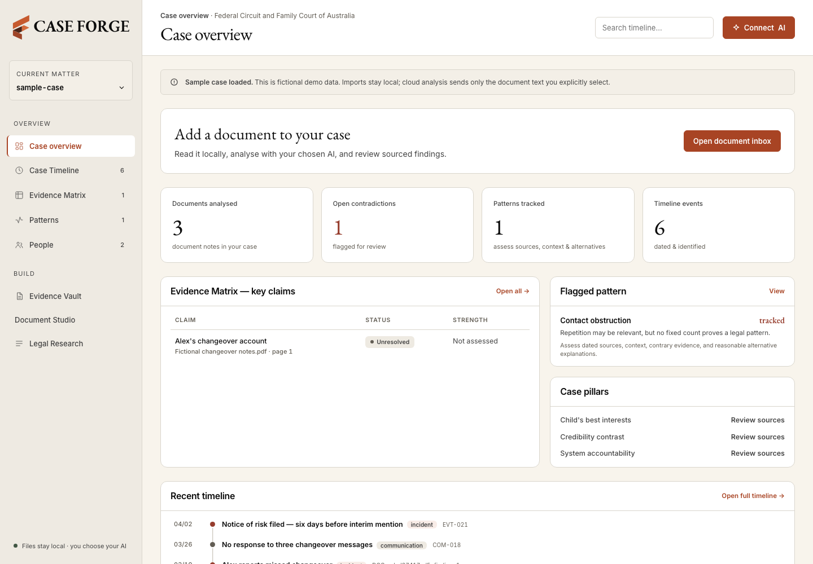
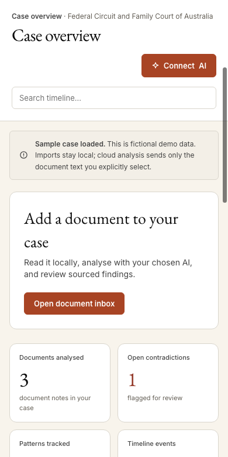

01 / ORGANISE
Evidence Vault
Bring documents, correspondence and working notes into a folder structure you can navigate.
Records. References. One place to begin.Open-source case intelligence.
Organise your family-court records. Examine the details. Prepare your questions and next steps.
Free, open-source materials. Use with your chosen tools.
Clarity before argument.
When you’re navigating family court, the records can be hard to keep on top of. Letters, messages, orders and notes all tell part of the story.
Case Forge helps parents bring those parts together: an evidence vault, reusable prompts and an optional AI workflow. So you can understand your material and have a clearer conversation about what comes next.
A look inside Case Forge
From the big picture to the original document. These are screens from the working app preview, using a fictional case.


Case overview · see your timeline, records and questions in one workspace.
Desktop app in development. Phone shows a responsive layout preview; an iPhone app is not available.
The open-source toolkit
A practical structure for the work in front of you. Start with your records and keep the source close to every note.
Bring documents, correspondence and working notes into a folder structure you can navigate.
Records. References. One place to begin.Set out claims, supporting sources and questions. Compare accounts and examine what still needs checking.
Separate the record from interpretation.Put events in date order. Use the chronology to see gaps and prepare questions for your next discussion.
Dates. Context. Practical next steps.New in the free toolkit
Save an exact statement with its supporting evidence and human review. Reuse its fact ID across your draft templates.
Conflicting evidence opens a review item. Accepted corrections create a new version, with the previous wording kept in the history.
Generate new drafts from the stored wording and flag altered facts or stale exports. Available through the toolkit command; an app review screen is still in development.
How verified facts work →Careful work. Clear boundaries.
Your case folder lives on your computer. Keep the original documents, work from copies and make your own backups.
The toolkit can be used with your preferred tools. Cloud AI processes the material you share with that provider. Check its privacy settings, access requirements and costs.
An AI suggestion is something to review. Check the original words, their context and any contrary evidence before relying on an interpretation.
Free toolkit · Get started
Choose a folder on your computer. Give the setup message to an AI that can work with local files, and it can install the structure and guide you from there.
Create a new case folder or select one you already use. Existing files are preserved.
Use an AI assistant with folder access. A regular browser chat can explain the steps, but cannot install files for you.
Your AI reads the included guidance and helps you find your first useful step.
Copy. Paste. Get organised.
This preview link works only on this computer. Use a local AI with folder access; the public link will be shareable after launch.
Read the setup instructions ↗Requires Node.js 18+ and npm. Replace ./My-Case with your folder.
The installer adds the toolkit and AI guidance. It stops if files would conflict.
The simpler option · Coming next
The free toolkit is there if you want to set things up yourself. We’re building a paid desktop app for people who want one place to add documents, connect their AI and get to work.
Planned product features. Pricing and launch date are still to be confirmed. Your AI provider’s costs are separate.
Early access
Leave your name and email for a desktop app launch update. No payment required.
Only your signup details are collected here. Please don’t include case information. How we use your details
Before you begin
The open-source toolkit materials are free. Optional third-party applications, AI subscriptions and API usage may have their own costs.
The toolkit’s fact command preserves verified versions and renders their exact wording into drafts. It flags drift and requires deliberate review for corrections. It does not prevent arbitrary edits by someone with file access, or independently prove a fact. See the workflow and its limits.
A local Case Forge app is in development. Join the desktop waitlist above for a launch update. Public installers and monthly billing are not available yet.
The intended paid app will let you cancel and keep your files, with working features requiring an active subscription. Pricing and a public subscription-based AI connection are still to be confirmed.
Open the local app preview →Your local case folder stays on your computer. If you choose cloud AI, the material you share is processed by that provider. The local app preview asks for consent before sending selected document text for cloud analysis; it also supports a local model option.
Case Forge is an organisation and analysis tool. It helps you prepare your material and questions. Check sources and obtain qualified advice for legal decisions.
A useful place to start
Simple guides for organising your records and checking the work as you go.
Keep originals safe and build an index you can follow.
Document organisation guide →02 / PrepareConnect dates to sources and see what still needs checking.
Case timeline guide →03 / ReviewReview quotations and decide what belongs in your notes.
AI document review guide →Open-source case intelligence.
Organise. Analyse. Prepare.